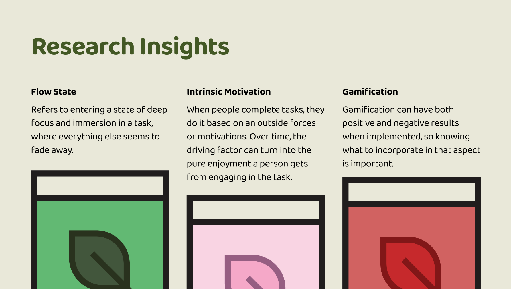
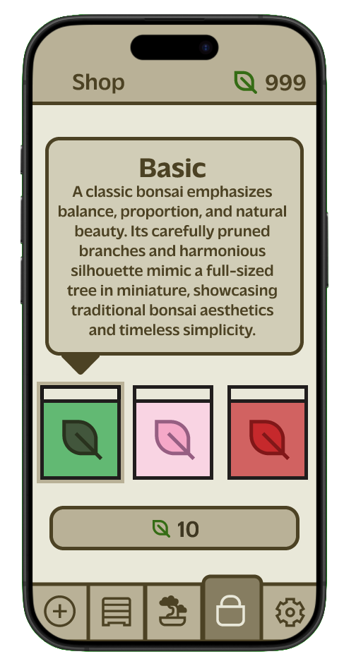
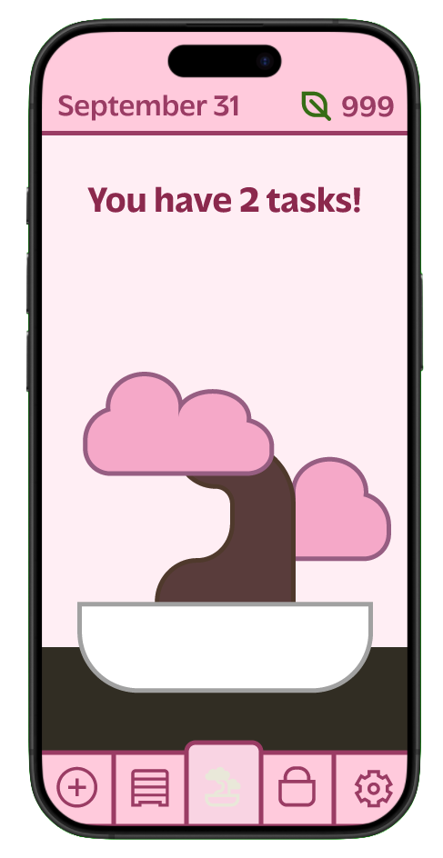
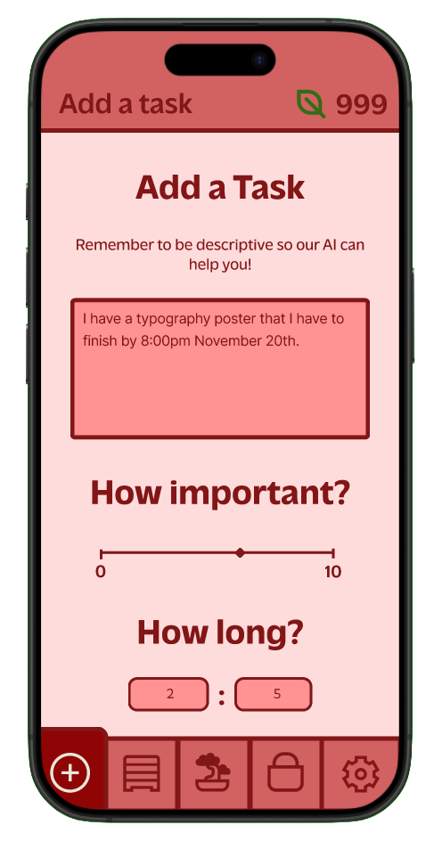
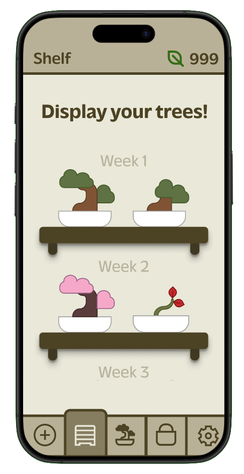

This project serves as an early exploration for me in UI/UX. The goal was to design and prototype a productivity app that reflects inner growth and fulfillment while ensuring a seamless user experience. Using and learning Figma for the high-fidelity design, we focused on creating an organized layout that prioritizes visual hierarchy, personality, and simplicity. This project needed a lot of research to develop fully, looking to Mihaly Csikzentmihalyi’s book Flow for inspiration in creating a self-rewarded and motivated experience that would genuinely impact users in a positive way, building productivity. The additional media for this project includes screenshots, mockups, sketches, and research within figma, showing how the project evolved as the semester progressed.




